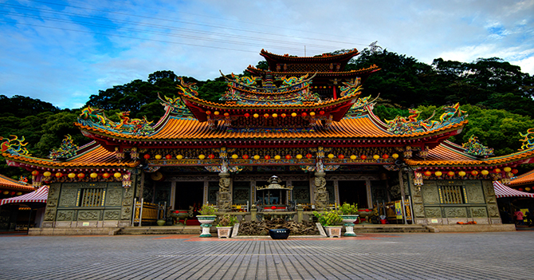
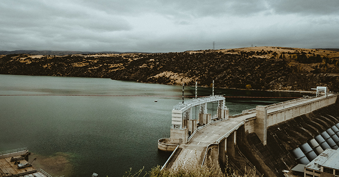
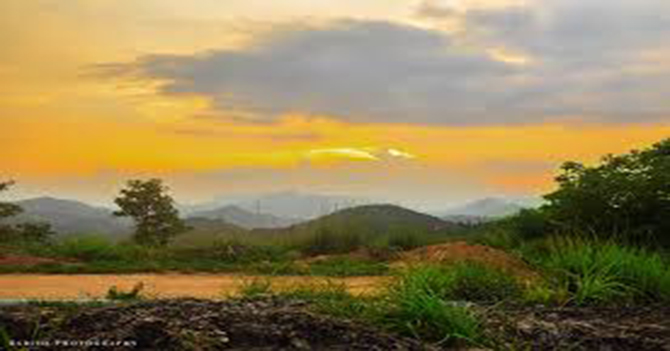
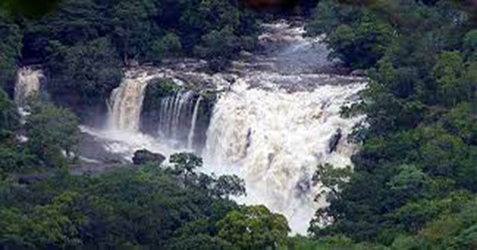

Munnar is a town and hill station located in the Idukki district of Southernwest Indian State of Kerala.
Munnar is located at 1600m above the sea level. Munnar is one of the most sought travel destinations in the world. It is a proper tourist hub with number of resorts and hotels which attracts travellers and tourists to visit munnar once.
It's beautiful view including the tea plantation, rare flora and fauna, it's well structured towns makes the vacation extended and worthy.
The unique sight of Neelakurinji flower that appears once in every 12 years is the point of attraction.
If you are visiting first time to munnar and doesn't have idea about routes, then you can visit munnar by air, road and also by train.
1. By Air.
If you want to visit munnar by air then you can take a flight to Cochin International Airport and then take a taxi to munnar.
The approximate distance of munnar from Cochin Airport is around 125 km.
2. By Road.
If you want to enjoy the road trip to munnar, then firstly you have to reach kochi, Aluva or Ernakulam and from there you can visit munnar.
If you want to travel by taxi, then you can hire taxi from cochi to munnar.
And if you want to travel by bus, then you can get tickets from counter of bus terminals located next to Aluva Railway Station.
3. By Train.
And if you want to reach kochi by train, then you have to reach Kochi or Ernakulum by train. The railway junction of cochi are connected to all major cities.
Once you visit kochi, then take a general taxi to munnar.
Approximate distance of Aluva Railway Station is around 120 km.
Munnar has a lot of attractive places to visit. If you are travelling first time to munnar, then these places will makes your body and soul refresh.
1. Karikodu Bhagavathy Temple, Idukki

Karikodu Bhagavathy Temple is 460 years old and is situated in the village of Karikkode near Thoduphuzha in Idukki, Kerala. Goddess Bhadrakali is the presiding diety of this temple. Besides Goddess Bhadrakali, the temple also has sub-dieties like Ganapathy and Shiva.
Thousands of devotees visit this temple every year to participate in the festival named "Kumbh Bharani" which organizes here.
The timing of this temple is from 4 AM to 11:30 AM and 5 PM to 8 PM.
2. Kulamav Dam

Kulamav Dam is on the periyar river. It is associated with the Idukki hydro electric power project in Kerala. This dam is situated on the Thodupuzha-puliyanmaka state highway about 23 km from Cheruthoni dam and 38 km from Thodupuzha.
It is an ideal spot for trekking. It is blessed with natural beauty, pleasant climate.
You can trek to the view point and evergreen forest of Painav Cheruthoni.
If you want to stay there, there are also some hotels and resorts nearby.
3. Pothamedu, Idukki

Pothamedu is located 6km from Munnar Idukki, Kerala. Travellers can enjoy an excellent view of tea and coffee plantations in Munnar. It is an ideal spot for trekking and can also enjoy walks int the rolling hill, small mountains.
It offers a breathtaking scenary of green environment.
There are some hotels nearby where you can stay.
4. Chinnar Wildlife Sanctuary in Idukki.

Chinnar Wildlife Sanctaury is the home to the Great Grizzled Squirrel od India which are now the most endangered species on Earth. Chinnar Wildlife Sanctuary experiences only 2 months of rainfall annually. It is an ideal spot for trekking fot those travellers who want to enjoy the wildlife along with dense forests. You can also accomodate in nearby hotels or resorts if you doesn't want to trek.